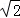
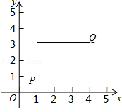

2016年北京市中考数学试题 · 数学解答题 第29题
29．（8分）（2016•北京）在平面直角坐标系xOy中，点P的坐标为（x1，y1），点Q的坐标为（x2，y2），且x1≠x2，y1≠y2，若P，Q为某个矩形的两个顶点，且该矩形的边均与某条坐标轴垂直，则称该矩形为点P，Q的“相关矩形”，如图为点P，Q的“相关矩形”示意图．
（1）已知点A的坐标为（1，0），
①若点B的坐标为（3，1），求点A，B的“相关矩形”的面积；
②点C在直线x=3上，若点A，C的“相关矩形”为正方形，求直线AC的表达式；
（2）⊙O的半径为

，点M的坐标为（m，3），若在⊙O上存在一点N，使得点M，N的“相关矩形”为正方形，求m的取值范围．
